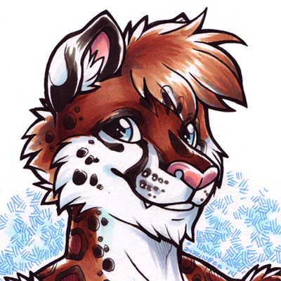
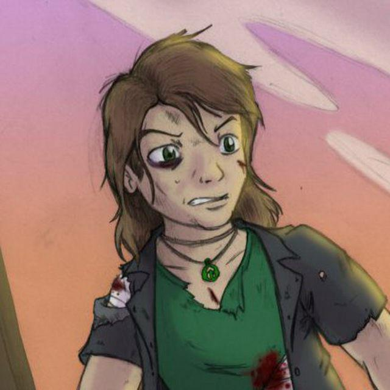
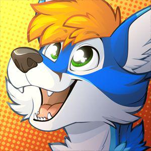
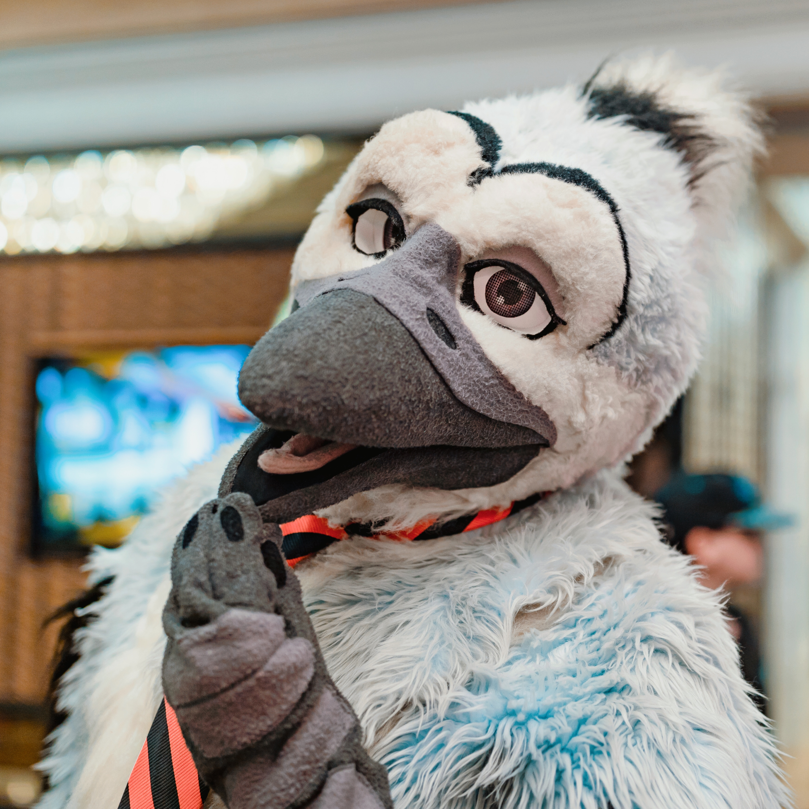
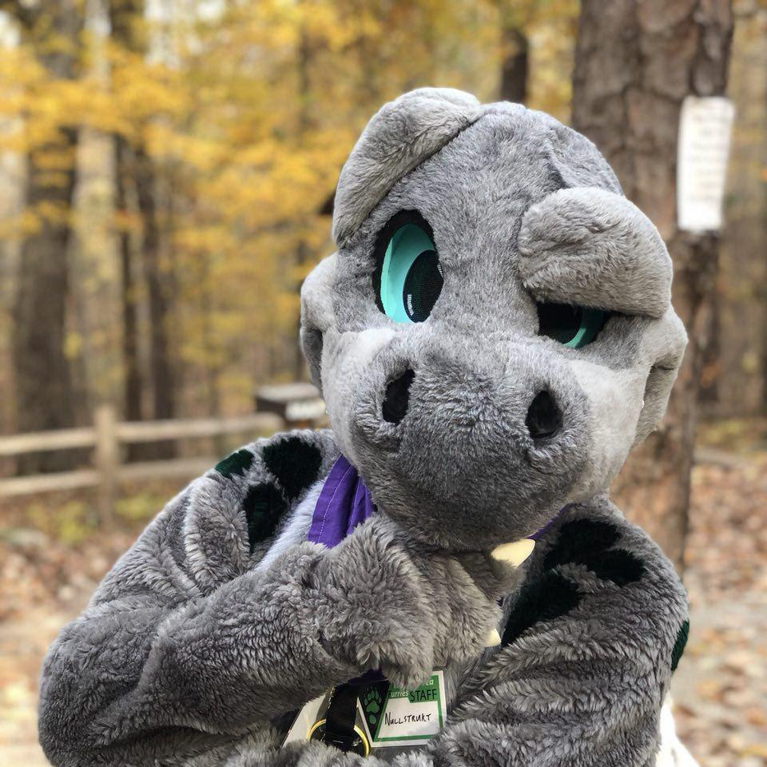
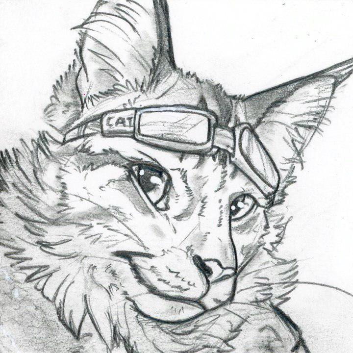
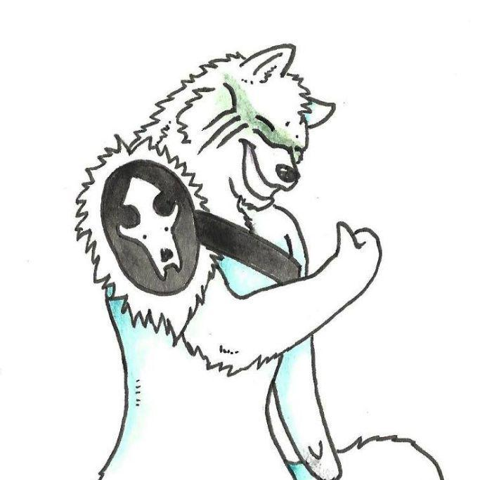

Meet the president and directors of NCAS!
Our members are the most important part of NCAS. Here you will find a listing of our president and operations directors who all work together in making the magic happen. This list is not exhaustive and does not include all of our amazing staff and volunteers. To all our staff and volunteers, thank you for the honor and privilege to be able to work with you in bringing it all together!
Merc
I’ve been active in the community for about a decade and have gotten to meet some amazing people from it! My background is in technology, business management, process improvement, and doing it yourself! In my role with NCAS I am putting all of that to use and have the pleasure of working with a great team that’s growing every day!
Mikey
Though I've only been active in the fandom since 2011, I have been watching shows with anthropomorphic characters since the late 80's! (Before you say anything, I'm not THAT old!) Professionally, I work as a Recruiter, with a background in Performance and Media Studies, and Event Planning. Since joining the fandom back in 2011, I have met some incredibly talented people (or fuzzbutts) that I have the honor of calling friends! Can't wait to see in helping NCAS grow their events and help put on events you'll be awestruck by!
Faelan
Hey there! I’m just your average internet wolf with an occasional presence in the physical world, although I also sometimes dabble in arcane human activities like science and computers. And computer science. Joining the community is just about the best thing I’ve ever done. It has helped me make so many incredible friends over the years, and I would not be the person I am today without them. I am super excited to be working with NCAS because it means I get the chance to give back to the community. Let’s go out there and do great things!
Keplin
Hi! I'm Keplin! It's so nice to meet you! Sometimes I like to dress up as a blue fox-husky or a blue accented German shepherd. To me, the best thing about the furry fandom are the wonderful and supportive people who compose it. I am super excited to do Guest Relations with NCAS because I hope to continue that tradition of care and support that I have come to know and love from our fandom! When I am involved in fuzzy things, I work towards becoming a physician so I can help all sorts of people. Hope to meet you soon!
Corvin
Hello! I’m a bird initially from Southern California currently nesting in North Carolina. The furry community there is vibrant and has lots of events. When I heard about NCAS and learned we share a similar goal, I knew I wanted to be a part of it. Together, we will help bring cool events to the local furry community. My background is in brand building, community management, and social media management. If anyone wants to talk shop, squawk at me on Twitter!
Nullstrukt
I officially found the fandom back in 2009, but was interested in anthro art and characters for as long as I could remember. Through the years of being in the fandom I have made some incredible friends and met so many awesome and inspiring people! Professionally I am a designer and developer by trade, and I also have been DJing for nearly as long as I've been in the fandom. I am super stoked to be helping establish some fun events for everyone and to be working with such a great group of folks!
Jeff Fah-Fah
I first became involved with the furry community in 2017 when I was asked to help at an event my roommates were working. I went into the weekend only knowing a handful of the people there, but left after meeting some of the greatest friends I could ask for. When I was approached to help found NCAS, I was immediately on board with the concept of having a community that could be a positive influence for all furries. Professionally, I work in IT, and have an extensive background in customer service and hospitality. I look forward to leading my awesome team as we move forward with this endeavor and plan for the future.
Wolf
Hey, I’m Wolf, and I have accepted my post with the NCAS in order to do what ive always done: helping others and aiding in bridging our communication gaps between one another. I look forward to working with the members of this group so that I can aid the community in expressing exactly who they are, where we as a pack (or various family group titles), and are wanting to go for this wonderful journey.
How to Get Involved
Have you reviewed our mission statement and love what NCAS is about? Do you want to join us? (We might have cookies.) We’re looking for more like-minded souls that share our values to aid in our quest!
NCAS is currently seeking more staff volunteers to help out in year-round and event-specific roles. Positions with us are unpaid, and do not have hard schedules or time requirements. However, accepting a staff volunteer position reflects a serious commitment to help NCAS achieve our goals. If you have any questions about how you can help NCAS, our human resources department will be happy to answer them. Send an email to hr@ncanthrosociety.com and one our attentive volunteers will get back to you.
Are you ready to sign up now? View the list of open positions, then submit a staff application with some information about yourself and what area you would like to help out in. Our human resources department will reach out to you and may have some additional questions.